Introduction to the Forward Search philosophy of data analysis
To introduce the rationale of our statistical approach, we consider a very basic goal, that is estimation of a parameter of interest µ (for example the mean of the population). The frequentist approach to statistical inference treats µ as an unknown constant. Furthermore it requires the specification of a family of models which are indexed by µ and uses the sample data to answer questions about µ and the model itself (Cox 2006). If the data do not contain outliers strong arguments can be produced for representing the data by their mean. That is, all information on µ given by the sample y1, … , yn is conveyed by the function M(y)= (1/n) ∑ yi. However, if the family of models is more sophisticated and allows the data to be contaminated from another distribution, a more complex function than the sample mean should be used to represent the data. One example of such a function is the trimmed mean, other examples are the M-estimator of location and the sample median (e.g. Maronna et al., 2006). All these functions originate from the pioneering work on robust statistics of Peter Huber and Frank Hampel in the 1970s and try to take into account the fact that the data under study may contain outliers.
To obtain robust estimates of the unknown parameter µ we thus need to follow one of the following strategies:
a) Use a reduced number of observations in order to exclude outliers;
b) Down-weight each observation according to its deviation from the centre;
c) Optimize an objective function which is more robust than the classical least-squares.
However, in all instances the simplicity of the sample mean is lost. Further disadvantages of these approaches are the fact that the percentage of observations to be discarded for estimation of µ needs to be fixed in advance (strategy a), that there is no universally accepted way to downweight observations (strategy b), and that optimization of complex functions may cause severe computational problems. Another fundamental shortcoming common to all the robust strategies described above is that their extension to complex problems such as those originating from serial and spatial correlation, the heterogeneity of data, etc. is difficult and requires ad hoc strategies for each specific problem.
Therefore, no single available robust technique can deal simultaneously with all the complexity features described above and provide the user with a unified view of the available data. Finally, the researcher loses the connection of the effect that each observation exerts on the estimates of the parameters in the proposed model. In the previous example of the estimation of µ, whatever approach is used the researcher loses the information that each observation, outlier or not, has on the final proposed estimate.
Our approach to data analysis and inference is different. Although, as in robust statistics, we are concerned with the effect that outliers may have on estimation and on other inferential problems, we want to have a tool that preserves the interpretative and computational simplicity of the sample mean, thus keeping its high efficiency when the basic uncontaminated model is true. More importantly, we think that it is extremely important to develop a statistical approach that can attack relevant inferential issues in a unified way, as described in the international trade example. We achieve this goal by basing our inference on carefully chosen subsets of the data. The key difference with respect to the robust strategy is that we do not choose just one subsample, but we fit a sequence of subsets and let the data decide which is best for the model under study.
This approach, known in the statistical literature as the forward search (FS), preserves robustness to departures from the underlying null model, because outliers and other observations not fitting this model are not present in the best subsample. It also ensures high efficiency because we only discard those observations while including all the “good” ones. Furthermore, the forward search is very flexible and can be tuned to solve apparently different statistical issues through the definition of powerful problem-specific diagnostic quantities.
At this point we would like to stress that we are not proposing a simple new algorithm but we are suggesting a new philosophy of looking at the data. Up to 30 years ago the absence of powerful computers prevented statisticians from diagnostic investigation of their models. The advent of powerful computers has made feasible the use of computationally intensive robust methods which minimize criteria different from the sum of squares. Both in the use of traditional robust and non-robust statistical methods, researchers end up with a picture of the data. Results obtained via a robust method are sometimes completely different and this causes dismay.
Our philosophy involves watching a film of the data rather than a snapshot. In other words, the crucial idea of the forward search is to monitor how the fitted model changes whenever a new statistical unit is added to the subset.
In the last ten years we have translated this concept into statistical terms, that is providing “forward confidence bands” in order to understand, from an inferential point of view, whether a new observation is in agreement with those previously included in the subset. In the problem of estimation of the mean, traditional statistical methods force all observations to be treated equally. Traditional robust methods allow differential treatment of the observations by use of iterative processes whose output sometimes seems to come from a black box. On the contrary, with our flexible, data-driven trimming resulting from the forward search, we can appraise the effect that each statistical unit (once it is introduced into the subset), outlier or not, leverage point or not, exerts on the fitted model. In other words, with our new philosophy we observe a film in which the different scenes are the individual observations. Thus, in our approach it is possible to understand the effect that each unit exerts on the fitted model.
In the rest of this section we present the main ideas of the forward search in linear regression and multivariate analysis together with the key mathematical aspects of this approach.
The Forward Search in linear regression
Basic ideas
If the values of the parameters of the model were known, there would be no difficulty in detecting the outliers, which would have large residuals. The difficulty arises because the outliers are included in the data used to estimate the parameters, which can then be badly biased. Most methods for outlier detection therefore seek to divide the data into two parts, a larger “clean” part and the outliers. The clean data are then used for parameter estimation. Our method follows this prescription, our emphasis being on parameter estimation once some of the data, including the outliers, have been removed for the purpose of parameter estimation.We start with a fit to very few observations and then successively fit to larger subsets. The starting point is found by fitting to a large number of small subsets, using methods from robust statistics to determine which subset fits best. We then order all observations by closeness to this fitted model; for regression models the residuals determine closeness. The subset size is increased by one and the model refitted to the observations with the smallest residuals for the increased subset size. Usually one observation enters, but sometimes two or more enter the subset as one or more leave. The process continues with increasing subset sizes until, finally, all the data are fitted. As a result of this forward search we have an ordering of the observations by closeness to the assumed model. The ordering of the observations we achieve takes us from a very robust fit to, for regression, ordinary least squares. If the model and data agree, the robust and least squares fits will be similar, as will be the parameter estimates and residuals from the two fits. But often the estimates and residuals of the fitted model change appreciably during the forward search. We monitor the changes in these quantities and in various statistics, such as score tests for transformation, as we move forward through the data, adding one observation at a time. As we show, this forward procedure provides a wealth of information not only for outlier detection but, much more importantly, on the effect of each observation on aspects of inference about the model.
Mathematical details
In the regression model
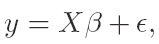y is the n×1 vector of responses, X is an n-by-p full-rank matrix of known constants, with ith row 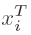, and β is a vector of p unknown parameters. The normal theory assumptions are that the errors ɛi are i.i.d. N(0,σ2). The least squares estimator of β is 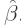 Then the vector of n least squares residuals is
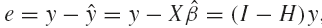
where 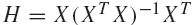 is the ‘hat" matrix, with diagonal elements hi and off-diagonal elements hij. The residual mean square estimator of σ2 is

The forward search in linear regression starts from a small, robustly chosen, subset of the data that is clear of outliers and fits subsets of increasing size. Each observation is tested for outlyingness before it is included in the fitted subset. The likelihood ratio test for agreement of the new observation with those already in the subset reduces to the well-known deletion residual. As the subset size increases, the method of fitting moves from very robust to highly efficient likelihood methods. The FS thus provides a data dependent compromise between robustness and statistical efficiency.
Let 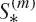 be the subset of size m found by the forward search, for which the matrix of regressors is X*(m). Least squares on this subset of observations yields parameter estimates 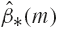 and 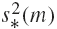, the mean square estimate of σ2 on m − p degrees of freedom. Residuals can be calculated for all observations including those not in 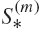 . The n resulting least squares residuals are
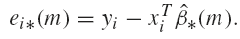
The search moves forward with the augmented subset 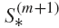 consisting of the observations with the m + 1 smallest absolute values of 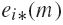. The estimates of the parameters are based only on those observations giving the central m residuals.
To start we take m0 = p and search over subsets of p observations to find the subset, out of 3,000, that yields the least median of squares (LMS) estimate of β (Rousseeuw 1984). Although this initial estimator is not √ n-consistent (Hawkins and Olive 2002) our results show that the initial estimator is not important, provided masking is broken. Identical inferences are obtained using the least trimmed squares estimator except sometimes when m is small and n/p<5. Random starting subsets also yield indistinguishable results over the last one third of the search. Examples for multivariate data are in Atkinson et al. (2006). The forward search, adding, and sometimes deleting, observations provides a bridge between the initial estimate and √ n-consistent parameter estimates for the uncontaminated observations as the sample size goes to infinity, in a similar way to the estimators discussed in Maronna and Yohai (2002).
The Forward Search in multivariate analysis
Basic ideas
Starting the Search. In presence of a v variables we find a small subset of size m0 which is outlier free. A size of 3v may be appropriate, although the size is not crucial. In the univariate example we could take the median observation and one observation either side and use these observations to estimate the mean and variance. This subset will be at the center of a univariate distribution with some outliers, from which it will be far. They will therefore be clearly revealed by their large Mahalanobis distances. In v dimensions we use medians as estimators of location and find observations that are close to the median in all bivariate plots of the data.Progressing in the Search. Given a subset of size m we estimate the parameters and calculate all n Mahalanobis distances. These are then ordered from smallest to largest and the m+1 observations with the m+1 smallest distances form the new subset. Here m runs from m0 to the fit to all observations when m = n. Usually one observation is added at a time, but the inclusion of an outlier can cause the ordering of the observations to change, when more than one unit may enter. Of course, at least one unit then has to leave the subset in order for the size to increase by one unit. This change of order during the search is a feature of multivariate data which we have stressed is absent in the analysis of univariate data.
Monitoring the Search. For each value of m we can look at the plot of all n Mahalanobis distances. If there are outliers they will have large distances during the early part of the search that decrease dramatically at the end as the outlying observations are included in the subset of observations used for parameter estimation. If our interest is in outlier detection we can also monitor, for example, the minimum Mahalanobis distance among units not in the subset. If an outlier is about to enter, this distance will be large, although it will decrease again as the search progresses if a cluster of outliers join.
Mathematical details
The main tools that we use are the values of various Mahalanobis distances. The squared distances for the sample are defined as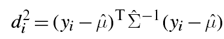
where 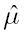and 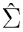 are the unbiased moment estimators of the mean and covariance matrix of the n observations and yi is v×1. In the forward search the parameters μ and Σ are estimated from a subset of m observations, yielding estimates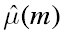 with 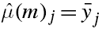 and 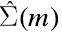 with 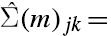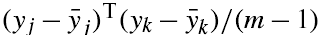.
Note that here yj and yk are m×1. From this subset we obtain n squared Mahalanobis distances
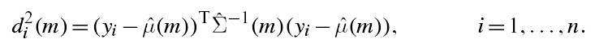
Unlike other methods, in the forward search we use many subsets for outlier detection, rather than one. The difference is between viewing a movie and a single snapshot. In the forward search we start with a subset of m0 observations which grows in size during the search. When a subset S*(m) of m observations is used in fitting we order the squared distances and take the observations corresponding to the m+1 smallest as the new subset S*(m+1). Usually this process augments the subset by one observation, but sometimes two or more observations enter as one or more leave. To start the procedure we find a starting subset S*(m0) that is not outlying in any two-dimensional projection of the data (Atkinson et al. (2004), section 2.13). We look at forward plots of quantities that are derived from the distances di(m) in which the parameters are estimated from the observations in S*(m). These distances for inot belonging to S*(m) tend to decrease as n increases. If interest is in the latter part of the search we may use scaled distances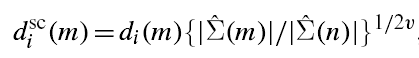
where 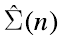 is the estimate of 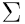 at the end of the search. To detect outliers all methods compare selected Mahalanobis distances with a threshold. We examine the minimum Mahalanobis distance among observations that are not in the subset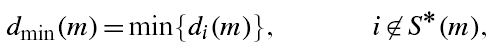
or its scaled version 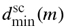. If this ordered observation [m+1] is an outlier relative to the other m observations, this distance will be ‘large" compared with the maximum Mahalanobis distance of observations in the subset. In uncalibrated use of the distances 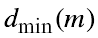 to detect outliers the decision whether a difference in distances is ‘large" is subjective, without reference to any null distribution. Examples include the data analyses in chapter 3 of Atkinson et al. (2004). Even if the asymptotic distribution of the individual distances is determined, as in Clarke and Schubert (2006), we still need to calibrate the complete search to provide an outlier test of ascertainable properties. To calibrate the forward search and so to provide an objective basis for decisions about the number of outliers in a sample we have found the distribution of in the forward search.